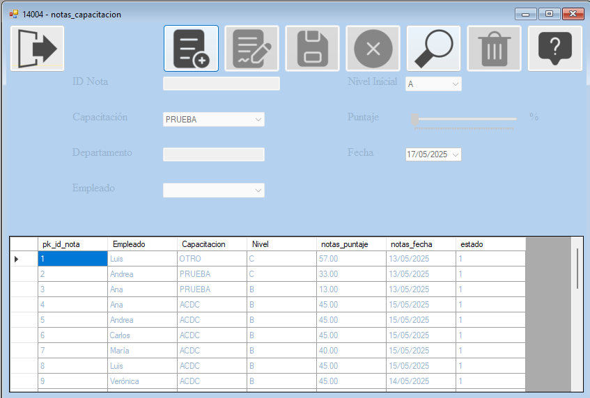
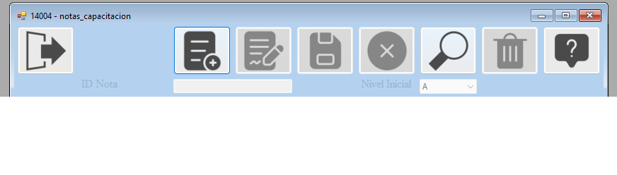
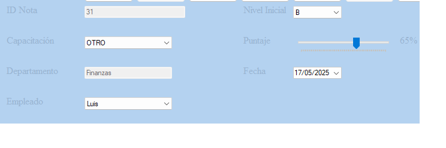
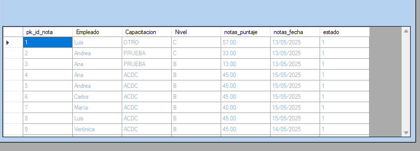

El formulario de notas tiene la función de ingresar las notas de cada empleado que haya asistido a las capacitaciones programadas por la empresa.
El formulario tiene un diseño amigable y fácil de usar, lo que permite a los usuarios ingresar y modificar la información de manera rápida y eficiente.

- Botones: Boton de ingresar, modificar, guardar, cancelar, eliminar, buscar, ver reporte, ver ayuda y salir.

- ComboBox Capacitacion: Permite ver las capacitaciones disponibles que aún no han sido cerradas formalmente.
- TextBox Departamento: Una vez seleccionada una capacitacion muestra el departamento al cual pertenece.
- Combobox Empleado: Definidos los dos puntos anteriores se selecciona el empleado del cual queremos ingresar la nota.
- Combobox Nivel Inicial: Muestra el nivel de competencia que posee el empleado previo a la capacitacion (no influye en el nivel del departamento).
- Trackbar Puntaje: Permite al usuario ingresar la nota en formato de porcentaje del empleado seleccionado en la capacitacion correspondiente.
- Fecha: Solo permite ingresar la nota en una fecha equivalente a la de hoy o anterior.

- Ver datos:En el DataGridView se podrán ver todas las notas
guardadas en la base de datos y se permitirá seleccionar cualquiera para poder editar eliminar o agregar una nueva .
